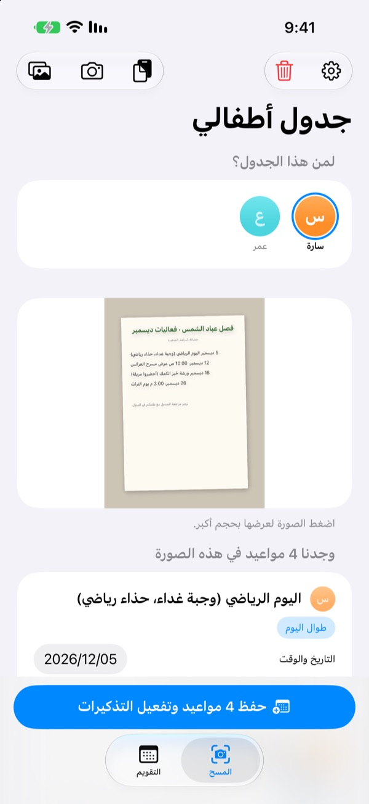
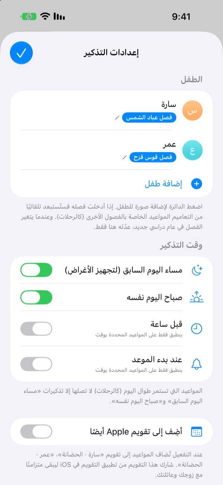
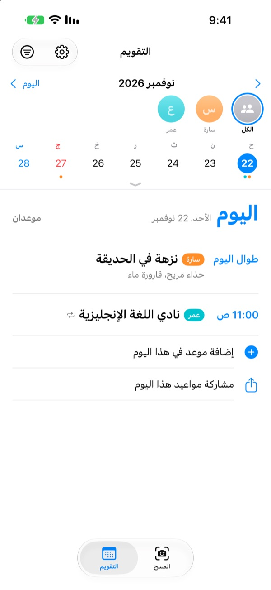

صوّر التعميم.
وجهّز الأغراض من الليلة السابقة.
التقط صورة لتقويم الشهر الذي يصلك من الحضانة، فيقرأ جدول أطفالي التواريخ والأوقات وأسماء الفعاليات ويضيفها كلها دفعة واحدة. وفي مساء اليوم السابق للرحلة، عند الثامنة، يصلك تذكير بتجهيز وجبة الغداء.
تصوير التعاميم وتذكير المساء السابق مجانيان. وصورك لا تغادر هاتفك.

جرّب تصوير تعميم
هذا تعميم تجريبي لفعاليات الشهر القادم. صوّره وسيستخرج المواعيد والأغراض المطلوبة كما يفعل التطبيق، ثم يجدول التذكيرات في الأوقات التي تختارها.
ما زلت تنقل مواعيد التعميم إلى تقويمك يدويًا؟
خمس أو ست فعاليات في الشهر، ولكل منها أغراض مختلفة: وجبة غداء، ملابس رياضة، مريلة. الجدول المعلّق على الثلاجة لا تراه وأنت في طريقك إلى العمل، فتتذكره دائمًا في صباح اليوم نفسه. جدول أطفالي يحوّل تلك الورقة إلى مواعيد في التقويم وتذكيرات.
صورة واحدة لشهر كامل
تقويم شهري أو تعميم أو نشرة مفردة: التقط صورة أو اخترها من مكتبتك، فنقرأ لك التواريخ والأوقات وأسماء الفعاليات. ويمكنك أيضًا لصق رسالة من الحضانة لنستخرج منها المواعيد.
قبل الحفظ صحّح أي عنوان أو تاريخ أو ملاحظة عن الأغراض المطلوبة، واسحب ما لا تحتاجه. وأدخل فصل طفلك لتُستبعد المواعيد الخاصة بالفصول الأخرى.
تذكير من المساء السابق
اختر بين الثامنة مساء اليوم السابق، والسابعة والنصف صباح اليوم نفسه، وقبل ساعة، وعند بدء الموعد. وتظهر ملاحظة الأغراض المطلوبة في التذكير، فتكون الحقيبة جاهزة.
فعّل تقويم Apple لتُضاف المواعيد إلى تقويم باسم طفلك، دون أن يتكرر أي موعد.

أكثر من طفل، والعائلة كلها
لكل طفل لونه. انتقل بين عرض الجميع معًا وعرض كل طفل على حدة، ومن المواعيد السابقة يخمّن جدول أطفالي لمن التعميم الذي صوّرته للتو.
أرسل رابط دعوة ليرى الزوج أو الأجداد أو المربية المواعيد نفسها ويعدّلوها. وأداة الشاشة الرئيسية تعرض ما هو قادم.

ثلاث خطوات للبدء
- 1
أضف طفلك
أدخل الاسم والفصل، وأضف صورته متى شئت.
- 2
صوّر التعميم
صوّره من الأمام مباشرة لتظهر الكتابة بوضوح.
- 3
راجع واحفظ
اسمح بالإشعارات لتصلك التذكيرات في الأوقات التي اخترتها.
متى تصل التذكيرات
- 8:00 مساء اليوم السابق
- وقت تجهيز الأغراض. مفعّل افتراضيًا
- 7:30 صباح اليوم نفسه
- مواعيد اليوم. مفعّل افتراضيًا
- قبل ساعة
- للمواعيد المحددة بوقت فقط
- عند بدء الموعد
- للمواعيد المحددة بوقت فقط
المواعيد التي تستمر طوال اليوم، كالرحلات، لا تصلها إلا تذكيرات مساء اليوم السابق وصباح اليوم نفسه. ويمكنك تشغيل أي منها أو إيقافه من الإعدادات.
تصوير التعاميم مجاني
مجاني
- قراءة المواعيد من الصور والرسائل بلا حدود
- التعديل قبل الحفظ واستبعاد الفصول الأخرى
- طفل واحد
- تذكير مساء اليوم السابق وصباح اليوم نفسه
- المزامنة مع تقويم Apple
- الانضمام إلى جدول تشاركه عائلتك معك
Plus وPro
- Plus: أكثر من طفل مع صورهم
- Plus: تذكير قبل ساعة وعند البدء
- Pro: كل ما في Plus، ودعوة العائلة للمشاركة
- Pro: أداة الشاشة الرئيسية
اختر اشتراكًا أسبوعيًا أو شهريًا أو سنويًا، أو ادفع مرة واحدة مدى الحياة. الإكراميات في الإعدادات منفصلة ولا تفتح أي ميزة.
بلا إعلانات.
أسئلة
ما أنواع الصور المناسبة؟
تقاويم الشهر (على شكل جدول)، والتعاميم المكتوبة على شكل فقرات، والإعلانات أو النشرات المفردة. التصوير من الأمام مباشرة بحيث تظهر الكتابة بوضوح يساعد كثيرًا، ويمكنك اختيار عدة صور ومسحها معًا. وعندما تكون لغة جهازك العربية يقرأ التطبيق التعاميم العربية، والتاريخ المكتوب مثل 12/7 يُقرأ يومًا ثم شهرًا.
بعض المواعيد ناقصة أو في عنوانها خطأ.
قد يصعب قراءة الخط اليدوي أو الطباعة الباهتة. صحّح العنوان أو التاريخ أو الأغراض المطلوبة مباشرة في القائمة، أو اسحب ما لا تحتاجه. وأضف أي موعد ناقص من «إضافة موعد يدويًا» في تبويب المسح، ثم احفظ من جديد.
لا تصلني التذكيرات.
تأكد من السماح بالإشعارات في الإعدادات > الإشعارات > جدول أطفالي. ويمكنك أيضًا من إعدادات التطبيق (⚙️) اختيار التذكيرات التي تصلك.
تظهر مواعيد الفصول الأخرى أيضًا.
أدخل اسم فصل طفلك في الإعدادات، فتُستبعد المواعيد الخاصة بالفصول الأخرى. وعندما ينتقل طفلك إلى سنة جديدة، غيّره هناك فقط.
لديّ أكثر من طفل.
أضف من تشاء من الأطفال في الإعدادات، ولكل منهم صورته. اختر لمن المواعيد التي تمسحها، فيعرض التقويم كل طفل بلونه، مع عرض مجمّع وتصفية لكل طفل. الطفل الثاني وصور الأطفال متاحة مع Plus.
كيف أشارك الجدول مع زوجي أو زوجتي؟
في الإعدادات، ضمن «مشاركة الجدول»، اضغط «ادعُ من يتابع معك» وأرسل الرابط في رسالة. يستطيع الطرف الآخر رؤية كل الأطفال والمواعيد وتعديلها، وأي تغيير من أي جهة يظهر عند الجهتين فورًا. هذه الميزة منفصلة عن «مشاركة العائلة» في Apple. بدء جدول مشترك يتطلب Pro، والمدعوون ينضمون مجانًا.
هل توجد طرق أخرى للمشاركة؟
زر المشاركة في تبويب التقويم يرسل ملف جدول أطفالي أو ملف تقويم (.ics) أو ملخصًا نصيًا. ومع تفعيل «أضِف إلى تقويم Apple أيضًا» يُنشأ تقويم باسم طفلك، ومشاركته عبر iCloud في تطبيق التقويم تُبقي عائلتك متزامنة أيضًا.
هل تُرسل صوري أو مواعيدي إلى أي مكان؟
لا. يُقرأ النص في صورك على جهازك بالكامل، وتُحفظ البيانات على جهازك فقط. ولا تمر المواعيد عبر iCloud الخاص بك إلا عندما تدعو أحدًا عبر «مشاركة الجدول»، وتصل فقط إلى من دعوتهم.
تواجه مشكلة أو تتمنى ميزة إضافية؟ راسلنا على leeo@kakao.com. نرد عادة خلال يومين إلى ثلاثة أيام، ويساعدنا أن تذكر طراز جهازك وإصدار iOS.